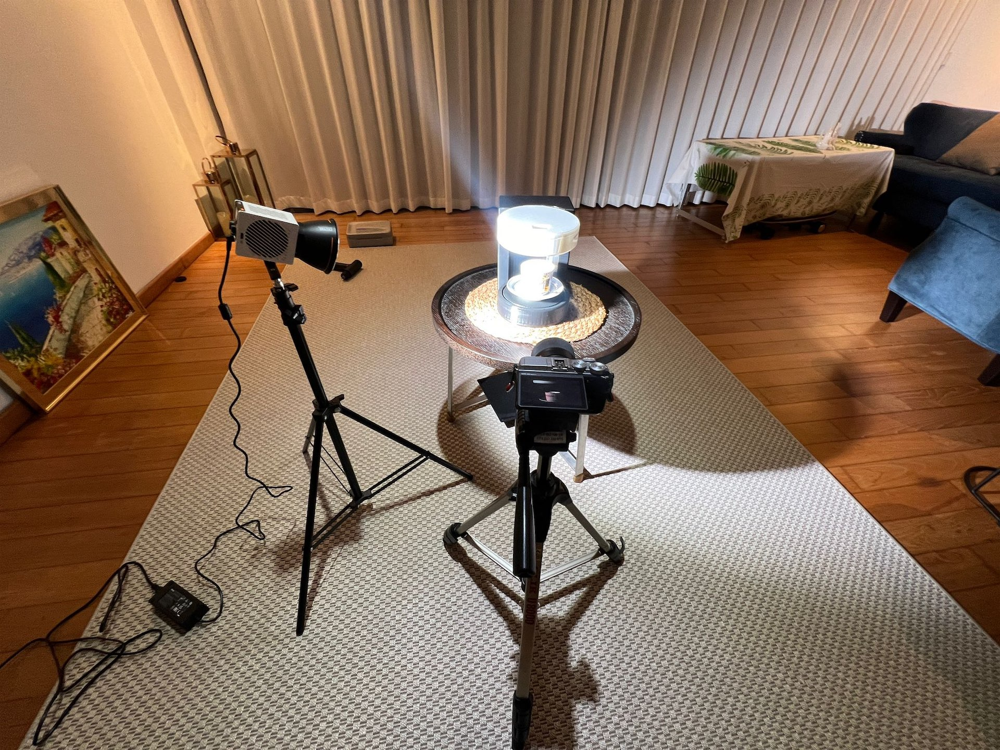
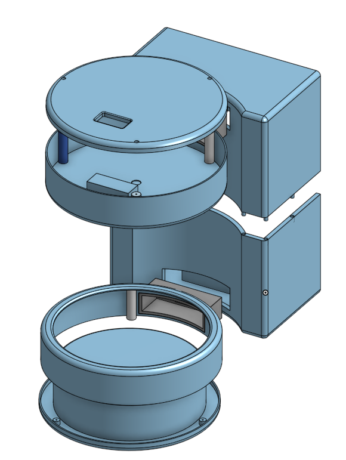
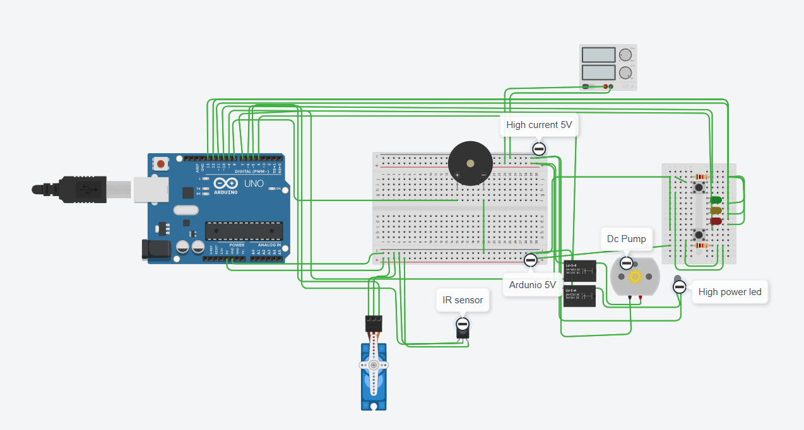
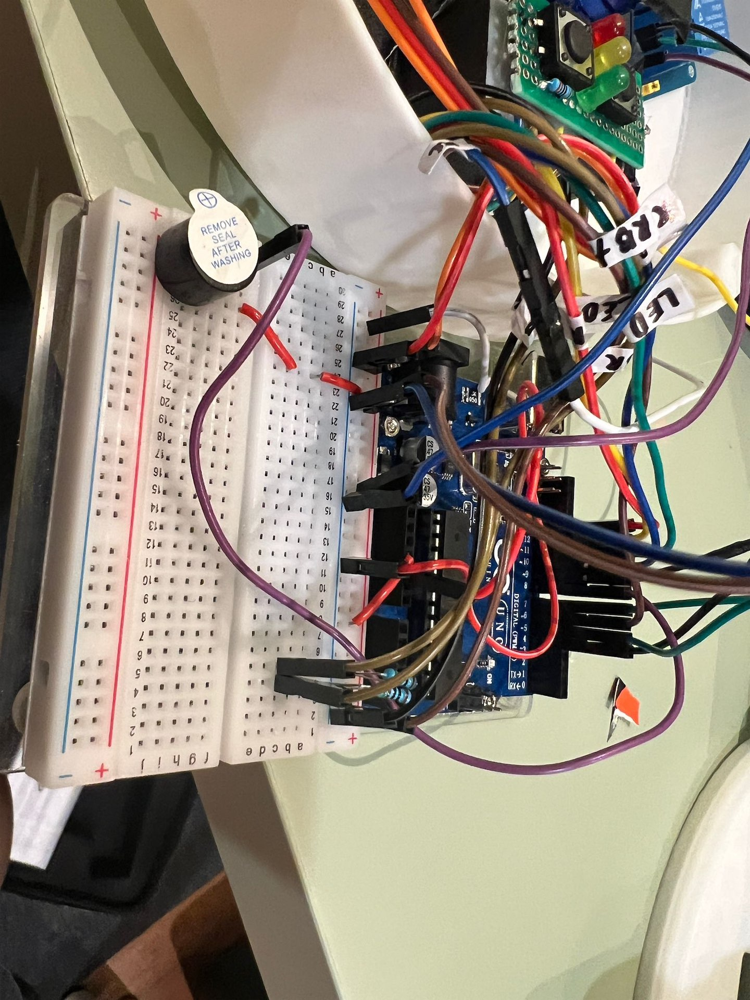
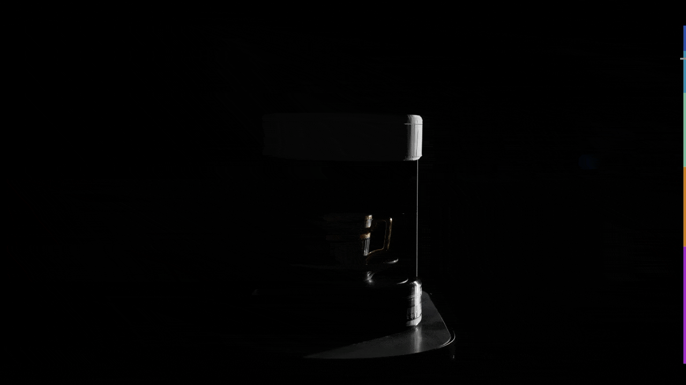

School Project
Elec-F Concept
ELEC-F is a conceptual product developed by my team and me for an engineering course. It utilizes the M5-Stack Controller along with various sensors to help prevent fatalities in walk-in freezers.
Promotional Video
Project Background
Pandus was the first major project I undertook as a first-year student at Nanyang Polytechnic. The assignment was open-ended, with no specific theme, and we were provided with various components including an Arduino Uno, 4G servo, LEDs, buttons, sliding switches, an infrared collision detection module, and a bundle of wires. Initially, I planned to create a water dispenser, but after discovering that someone else had already chosen that idea, I decided to pivot and develop a syrup dispenser instead—hence the unconventional choice.

BTS of how a part of the video was filmedDesign process
Pandus was designed using Onshape. With limited prior experience, I spent a significant amount of time learning how to use the software effectively. Eventually, I created the final design shown below, which I chose to proceed with for the project. Due to time constraints, I wasn't able to create any prototypes beforehand, so I took a leap of faith and sent the design straight to the 3D printer. Fortunately, everything fit perfectly on the first try. CLICK HERE FOR A LIVE PREVIEW OF THE MODEL

Control and Function
We were taught to code using Python and utilized the Firmata library to enable communication with the Arduino. Below are examples of the components and flowcharts illustrating how the system functioned. Since Tinkercad lacked some of the components I needed, I used substitute parts and labeled them accordingly to indicate their intended functions. In addition to the components provided, I purchased high-powered LEDs, a DC pump, a relay board, and used a separate power bank to power the high-current components.


Cover Image
I was especially proud of how the cover image turned out. I captured four separate photos of Pandus under different lighting conditions and blended them together in Photoshop to create the final composition.

An animation on how it was created